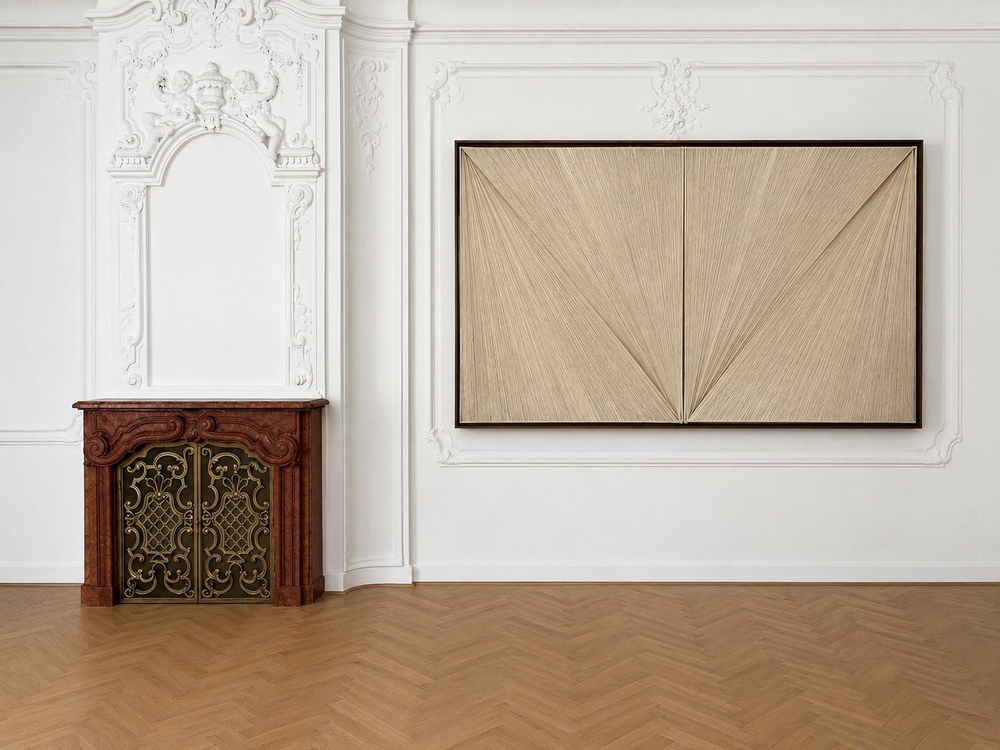
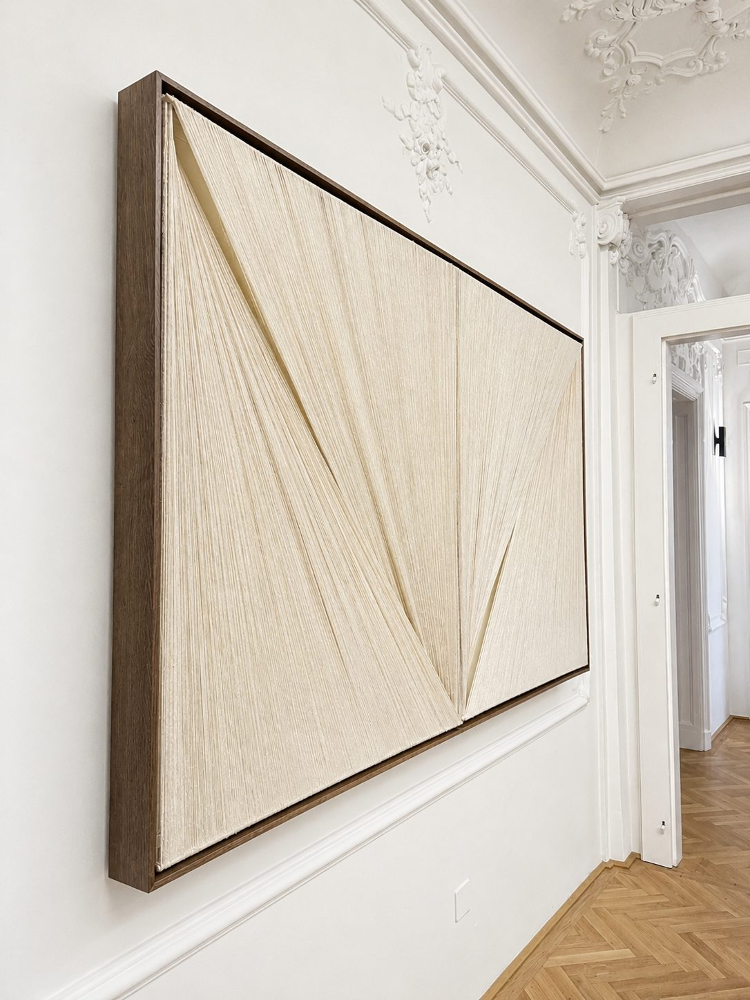
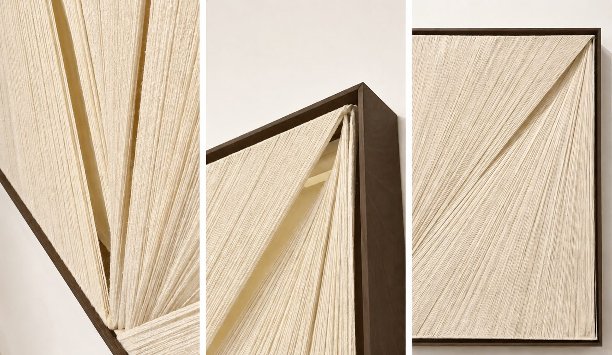
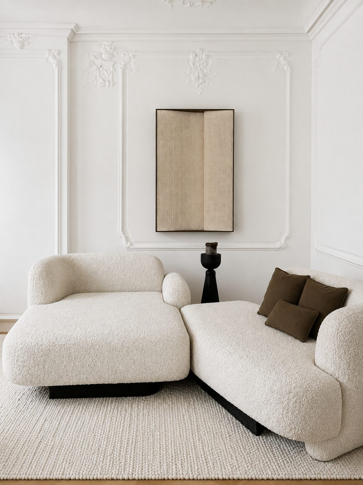
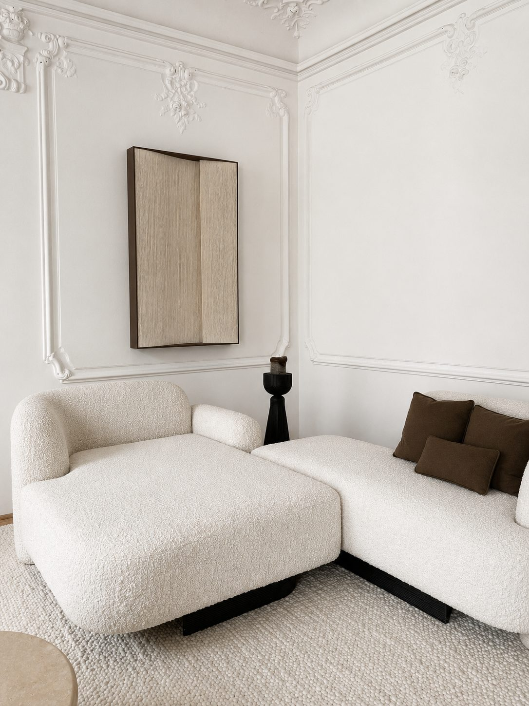
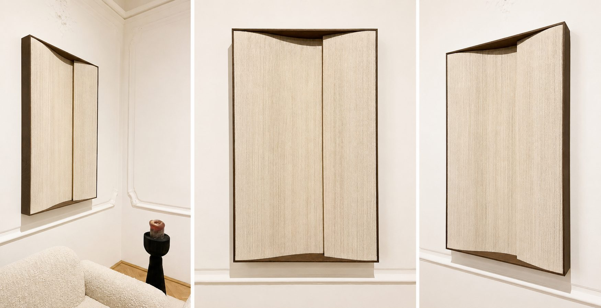
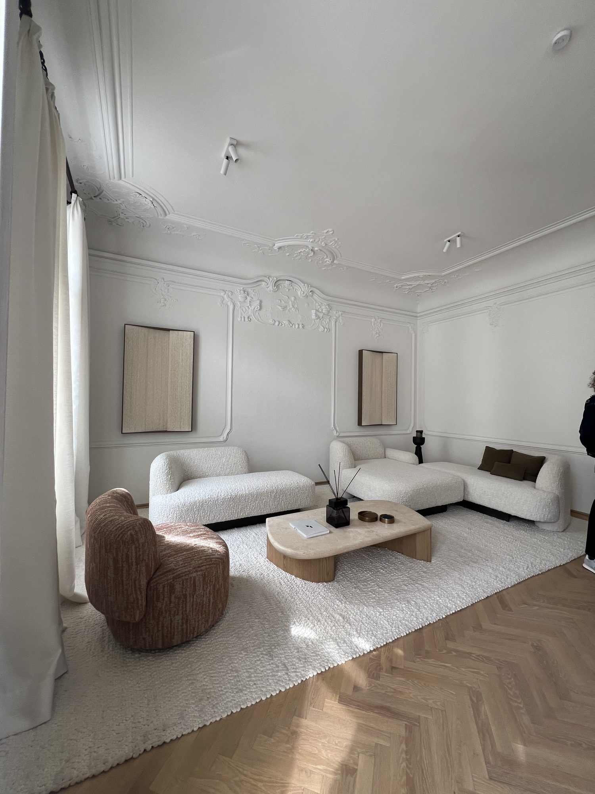

Soft Series, 2026
Handspun silk, oak, steel, love, time.
Two works, Feather and Wave, made in collaboration with Bernd Gruber. Curated by Vanja Zanko.
Soft Series unfolds at the intersection of weaving, architecture, and interior space. Composed of hand-spun silk, the works explore tension, balance, and subtle movement, where structure and fragility exist in quiet relation.
Rooted in a deep sensitivity to material and process, the collaboration reflects a shared understanding of craftsmanship as an embodied form of knowledge.
About Bernd GruberBernd Gruber is internationally recognised for its uncompromising approach to craftsmanship, operating at the intersection of architecture, interior design, and bespoke production. bernd-gruber.at





